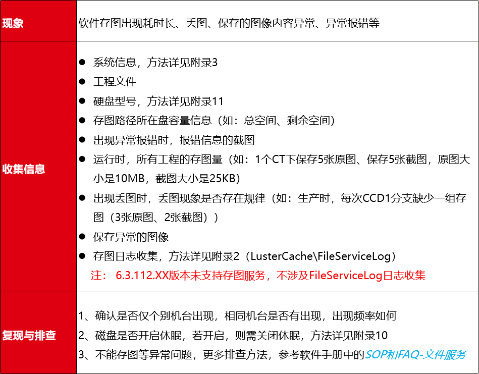

1 概述
本文档主要用于客诉反馈时，指导用户收集信息、复现排查并正确填写问题单，以加速问题复现、定位和解决，快速恢复生产，减少客户损失。
2 基本信息
问题描述：现象、频次
项目名称：
反馈人：
问题版本：
期望解决日期：
注意
项目名称格式如下：项目类型-最终用户-设备商-项目/工站名称
ex： 对位-嘉善立讯-杰士德-FCMXX检测项目
项目类型：对位、检测、2D量测、3D量测、激光、深度学习、学习反馈（不涉及项目生产）
示例
3 问题相关资料收集
请大家在遇到问题时，优先使用本文档进行初步排查，如仍无法解决问题，尽快进行问题反馈！如版本比较旧，请在条件允许的前提下，及时更新版本！
先对问题进行大类的划分，核对现象是否一致或接近，查阅信息收集清单及相关方法，进行信息收集与回传。当问题涉及多个问题归类时，所需信息都需要进行收集。
如：现场发现相机重命名时崩溃，则需要按崩溃和相机问题进行信息收集（dump、操作记录、采集日志、相机型号等）
3.1 软件无法打开
3.2 软件崩溃
3.3 软件卡死
3.4 软件闪退
3.5 软件使用卡顿
3.6 软件工具缺失
3.7 2D相机问题
3.8 3D相机问题
3.9 通信问题
3.10 存图

3.11 深度学习耗时问题
3.12 加密狗
3.13 工具类
3.14 其它疑难问题
4 ONES录入问题单
4.1 电脑端
4.1.1 登录ONES系统
第1步：登录网址https://ones.lusterinc.com
第2步：点击“L”图标，切换到LDAP/AD登录方式
第3步：使用LDAP/AD账号登录，输入域账户、域密码即可完成登录
4.1.2 录入问题单
第1步：左侧菜单栏选择“项目/需求管理”

第2步：右上角点击“+”，新建工作项（也可批量导入工作项，见附录6）
第3步：所属项目选择Onsite Issue，工作项类型选择Bug-FB
第4步：填写字段信息-标题、描述、反馈人、工程项目名称、影响版本、截止日期，其中项目名称格式如下
- 项目名称格式如下：项目类型-最终用户-设备商-项目/工站名称
ex： 对位-嘉善立讯-杰士德-FCMXX检测项目
第5步：上传相关资料，小文件可点击上图的“上传文件”进行上传，大文件（如：工程文件、dump、图像、镜像文件等）建议上传云盘：AnyShare://IVS23 3C产品部/3C产品发布/06-学习资料/ONES附件上传（创建一个以单号命名的文件夹，将附件上传至文件夹中）
注意
如dump、镜像文件等文件过大时，可通过微信、钉钉、百度云盘等方式，发送给测试部相关测试人员。
4.2 手机端
4.2.1 登录ONES系统
4.2.2 录入问题单
4.3 查看本人提单
第1步：登录后，点击上方的“筛选器”
第2步：点击筛选器中的“客诉提单”
第3步：可查看全部客诉单，也可查看本人提单
第4步：可在右上角的搜索区搜索某个问题
5 附录
5.1 dump收集
5.2 log收集
5.3 系统信息收集
5.4 系统日志收集
5.5 加密狗信息收集
【sentinel-旧加密狗】
【sense-新加密狗】
5.6 批量创建/导入问题单
字段填写说明（以上字段均为必填项）
标题：问题概要说明
负责人：平慧
工程项目名称：参考“2 基本信息”
添加\删除，新建问题单个数
描述信息补充（如：填写操作、频率等信息）
批量导入问题单

第1步：下载上述“ONES导入客诉模板”
第2步：填写相应字段信息
导入客诉模板说明（模板内字段均为必填项）
（1）标黄字段则统一内容进行填写
（2）截止日期：格式为2022-XX-XX
示例如下：
（3）工程项目名称：参考“2 基本信息”
第3步：登录ONES系统
第4步：左侧菜单栏点击“项目/需求管理”
第5步：点击全部项目中“Onsite lssue”

第6步：点击“Bug-FB”

第7步：点击“Bug-FB”下拉列表中“导入Bug-FB”
第8步：点击“选择文件”
第9步：选择已填写的“ONES导入客诉模板.xlsx”，点击“下一步”
第10步：点击“开始导入”（导入后会自动匹配字段）
第11步：点击“确定”
第12步：界面左侧会出现导入进度管理器
5.7 制作系统镜像文件
工具及操作文档，下载路径为公司云盘：AnyShare://IVS23 3C产品部/3C产品发布/03-FAQ/制作系统镜像
5.8 查看CUP温度和转速
第1步：解压“AIDA64”文件
下载路径为公司云盘：AnyShare://IVS23 3C产品部/3C产品发布/03-FAQ/查看CPU温度和转速工具
第2步：打开压缩包，找到“aidi64.exe”双击打开
第3步：显示软件界面后，依次点击“计算机->传感器（注：会先获取传感器信息，需要一些时间）”。需截取多张图片。
5.9 查看windows系统版本号
5.10 查看磁盘休眠时间（关闭休眠）
5.11 查看硬盘型号